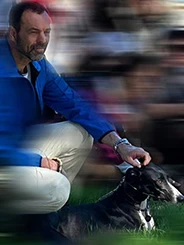
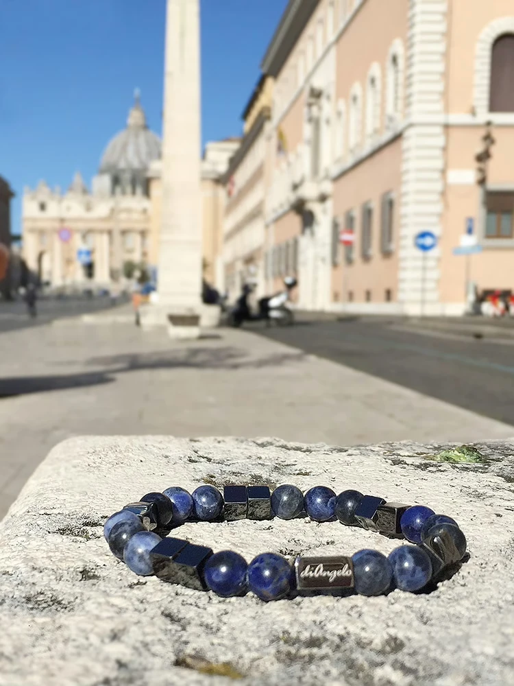
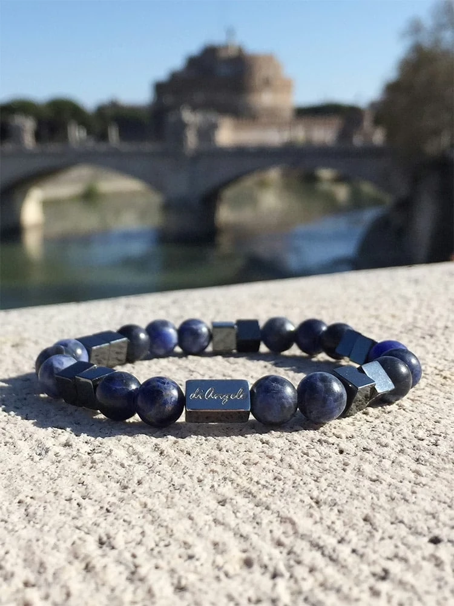
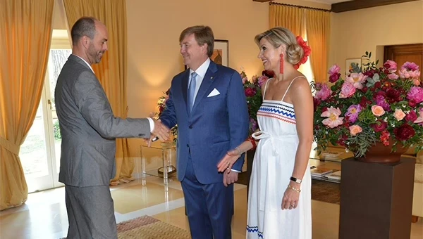

Rome, Italy
Introducing Angelo, the creator of Eternal City Jewelry, a Dutch jewelry artist based in the heart of Rome, Italy. Angelo is renowned for creating bespoke, handcrafted pieces of jewelry that are both stunningly beautiful and completely unique.
With years of experience and a passion for creating one-of-a-kind designs, Angelo has honed their craft to perfection. Each piece is carefully crafted using only the finest materials, including precious metals, gems, and stones, to ensure exceptional quality and durability. From Raw Stones to your door in 1 week!
Whether you’re looking for a classic piece of jewelry with a modern twist or a bold, statement piece that will turn heads, Angelo has something for everyone. His collection is as diverse as it is beautiful.
What makes Angelo truly stand out is his talent for collaborating with clients to craft custom designs that capture their individual style and personality. His attention to detail and commitment to excellence ensure that every piece becomes a cherished keepsake.
Why settle for the ordinary when you can own a masterpiece of wearable art? Explore Angelo’s online store today and experience the exceptional beauty and craftsmanship that define his jewelry.


His passion for gemstones is the cultural and geographic history behind natural stones and gemstones in particular. He believes that every type of stone has it’s own character, history and cultural belief.
As you can see on the Gemstone Bracelet Meaning & Bracelet Benefits page, all Gemstones come from all over the world. They get elaborated, polished and combined in the eternal city of Rome. Made In Italy 100%. He’s looking for those unique stones that can be worn in every special occasion. His passion is to provide others luxury wrist-wear what can be worn in any occasion. If you have any questions or comments, please contact.
In 2017, Angelo, the business owner, had the honor of being introduced to King Willem-Alexander and Queen Máxima of the Netherlands during their visit to Rome. A select group of Dutch residents in Rome, including Angelo, were chosen to meet the royal couple. Angelo described the experience as the highlight of his year, deeply honored by the encounter.


Discover unique, handcrafted treasures and support the artisans who bring them to life. Shop with purpose, and make a meaningful impact today!